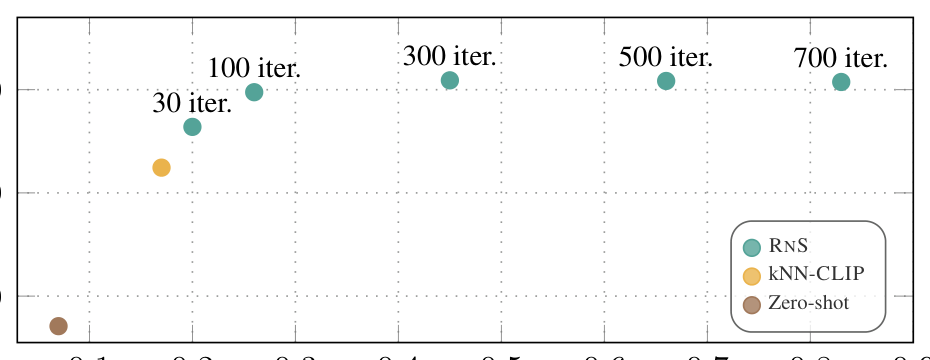
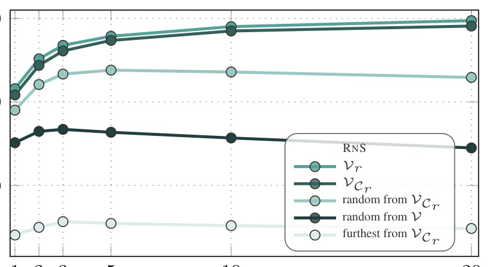

RNS: retrieve a few annotated examples, then adapt the segmenter for the current image
1. Lead
The short version. Open-vocabulary semantic segmentation, or OVS, asks a model to assign every pixel to arbitrary class names supplied at test time. A vision-language model, or VLM, is an image-text model trained to place images and language in a shared feature space, but most VLMs learn from image-level supervision rather than pixel masks. That mismatch makes zero-shot segmentation, where no pixel-annotated examples are provided for the test classes, much weaker than fully supervised segmentation. Retrieve and Segment, or RNS, changes the setup into a few-shot one by adding a support set: a small collection of pixel-annotated images for some or all classes. A prototype is one feature vector that summarizes a class, and RNS first fuses the text prototype $t_c$ with the visual prototype $v_c$ before making predictions. It then uses k-nearest-neighbor retrieval, or kNN retrieval, to pull the support features most similar to the current query image. Finally, it performs test-time training, meaning it optimizes a tiny linear classifier for that one image while keeping the VLM and mask backbones frozen. In the DINOv3.txt plus SAM 2.1 setting, where DINOv3.txt is a DINOv3 vision backbone adapted for text-aligned dense features and SAM is the Segment Anything Model used for region proposals, RNS with $B=20$ support images per class reaches 61.9 mIoU, where mIoU means mean Intersection-over-Union; that narrows, but does not close, the average gap to fully supervised segmentation to 11.5 mIoU — and that average is uneven, with RNS even surpassing fully supervised segmentation on one fine-grained set while trailing well behind on others.

2. Motivation: language opens the vocabulary, but not the mask
Fully supervised semantic segmentation trains on dense pixel annotations for a fixed class set. It localizes well, but it does not scale to every class a user may name later. OVS tries to remove that fixed vocabulary by replacing the learned classifier with text features from a VLM.
The paper argues that two limits then appear. First, the VLM was trained with image-level text supervision, so it did not have to learn exact pixel boundaries. Second, natural language can be ambiguous at segmentation granularity. A class name such as "plant" or "train" may carry enough information for image retrieval, but not enough to choose the right pixels in a cluttered scene.
RNS asks whether the missing supervision can be supplied at test time by a small set of annotated examples. The examples are not used to retrain the backbone. They are converted into compact class features and retrieved when a query image arrives.
Q: if the model already knows the class name, why should one or two annotated images help?
A: The class name says what the category is. The annotated image shows what the category looks like in pixels for this task.
Takeaway: RNS treats text as a semantic prior and visual support as task-specific evidence, then makes both available to the same small classifier.
3. Contributions: what RNS adds
The paper's first contribution is the few-shot OVS setting itself. Each test class may have textual support, visual support, both, or only one of the two. Visual support consists of raw images with pixel-level labels, but RNS stores only features derived from them.
The second contribution is prototype-level fusion. Earlier retrieval-based competitors such as kNN-CLIP and FREEDA combine text-based and visual predictions after the predictions already exist. RNS instead forms fused class features first, so the per-image classifier sees training examples that already contain both modalities.
The third contribution is retrieval-augmented test-time adaptation. For each query image, RNS retrieves relevant visual support features, uses them with fused class features to train a linear classifier, and applies that classifier back to the same query image.
The fourth contribution is a set of partial-support variants. If some classes lack visual examples, RNS uses zero-shot patch predictions from the query image to build pseudo visual class features. If some classes lack text names, it replaces the missing text feature with the average available text feature. These choices keep unsupported classes in the loss instead of silently dropping them.
4. Datasets and evaluation setup
The main average in Figures 3 and 4 uses six OVS validation benchmarks: PASCAL VOC, PASCAL Context, COCO Object, COCO-Stuff, Cityscapes, and ADE20K. The paper reports average mIoU over these datasets unless it says otherwise.
The headline 61.9 / 73.4 / 11.5 numbers come from Table 2, whose six columns are a different set: VOC, Cityscapes, ADE20K, PASCAL Context-59, FoodSeg103, and CUB. Table 2 drops Context, Object, and Stuff and adds the three fine-grained sets (C-59, Food, CUB) to compare against fully supervised segmentation, so its average is not the same as the Figure 3/4 OVS-benchmark average above. The support images are sampled from each dataset's training split. The sampling intentionally follows class frequency, so frequent classes can appear more often and the benchmark keeps a realistic long tail.
The visual support budget is written as $B$, the number of support images per class. The paper creates support sets with four random seeds, except VOC and Cityscapes, where it uses eight random seeds. For partial-support experiments, it randomly removes visual or textual support for a fraction of classes.
| Setting | Available class information | What RNS must do |
|---|---|---|
| Full support | Every class has a class name and at least one annotated support image. | Fuse text and visual prototypes for all classes. |
| Partial visual support | Every class has text; some classes have no visual examples. | Use pseudo-labeling from the query image to create missing visual prototypes. |
| Partial textual support | Every class has visual examples; some classes have no class names. | Use a neutral average text feature for classes without names. |
| Only textual support | Every class has text; no visual support images are provided. | Reduce to the usual zero-shot OVS setting. |
5. Pipeline: build support once, adapt per image

RNS separates persistent support from per-image adaptation. Persistent support contains two feature sets. The visual support feature set $V$ stores per-image class vectors from annotated support masks. The fused support feature set $F$ stores text-visual class vectors for all classes and all selected mixing weights.
When a query image arrives, RNS does not train on the whole support set. It retrieves only support features close to the query patch or region features. This keeps the per-image training set small and makes the classifier concentrate on classes that look relevant to the current image.
The same pipeline can run at patch level or region level. Region-level prediction uses SAM 2.1 masks: each SAM region pools the dense VLM patch features inside the region, and RNS classifies the region feature. The paper reports that SAM proposals improve boundary quality, but they add inference cost.
6. Method: fuse prototypes, retrieve support, train one classifier
6.1 Zero-shot VLM prediction
A query image is encoded into patch features $x_j \in \mathbb{R}^d$, and each class name $c$ is encoded into a text feature $t_c \in \mathbb{R}^d$. The zero-shot prediction for patch $j$ and class $c$ is a softmax over dot products:
6.2 Visual and fused support features
For support image $i$, RNS extracts patch features $x_j^i$ and down-samples the ground-truth mask into patch-level soft labels $P_{jc}^i$. It pools the support patches for class $c$ into a per-image visual class feature:
Across all support images, these per-image features form the visual support feature set and an aggregated visual class feature:
The key fusion step happens before prediction. For class $c$ and mixing weight $\lambda$, RNS forms a fused prototype:
The paper uses multiple mixing weights rather than one. The implementation fixes $\Lambda=\{0.9,0.8,0.6,0.4,0.2,0.0\}$, so the classifier sees several text-visual balances for the same class.
6.3 Retrieval and the per-image objective
For a query image with features $x_j^q$, RNS retrieves the $k$ nearest neighbors of each query feature from the visual support feature set:
RNS also estimates a class relevance weight from the query image-level feature and the text feature:
The classifier $g_\theta:\mathbb{R}^d\to\mathbb{R}^C$ is a linear layer trained for the current image. With full textual and visual support, its loss is:
Partial visual support adds pseudo-labels for classes with text but no examples. The paper pools query patches predicted as those classes to create missing visual features, then adds a Kullback-Leibler term:
Q: why train a classifier instead of averaging text and visual predictions at the end?
A: Late averaging mixes decisions after each modality has already made its own mistake. RNS mixes the class features first, then learns one classifier from the retrieved examples for this image.
Takeaway: The adapter is small, but it changes the point of fusion from prediction space to feature space.
7. Training: the backbones are frozen; the query gets a tiny classifier
RNS does not fine-tune the VLM backbone or SAM. It extracts support features, stores compact prototypes, and trains only the per-image linear classifier $g_\theta$ when a query image arrives. This is why the paper calls the method a test-time adapter.
The implementation uses OpenCLIP ViT-B/16 trained on LAION with the MaskCLIP trick, and DINOv3.txt ViT-L/16 for text-aligned dense features. CLIP means Contrastive Language-Image Pre-training, the VLM family that aligns text and image features with a contrastive objective. For region proposals, the paper uses SAM 2.1 Hiera-L with a $32\times32$ point grid and non-maximum suppression.
The fixed RNS hyperparameters are $k=4$, $\tau=0.1$, $\beta_f=1.5$, $\beta_p=0.2$, and $\Lambda=\{0.9,0.8,0.6,0.4,0.2,0.0\}$. The per-image classifier is trained for 700 steps with learning rate 0.02 using Adam in full-batch mode, so no mini-batch stochasticity is involved.
The paper states that test-time training takes less than one second on a single NVIDIA A100 GPU. The supplement's runtime plot uses DINOv3.txt at patch level with $B=5$ and averages over VOC, ADE20K, and COCO-Stuff; it shows that fewer iterations reduce overhead while keeping a performance boost over feedforward baselines.
{kind=link}

8. Experiments: support helps, but the gap remains
Full textual and visual support
Figure 3 varies $B$, the number of visual support images per class. The named competitors are the zero-shot VLM prediction, kNN-CLIP, and FREEDA. kNN-CLIP is a nearest-neighbor OVS method that uses support class vectors, while FREEDA is adapted here from generated support prototypes to real pixel-annotated support images.

The paper reports two one-shot gains from this figure: +7.3 mIoU over zero-shot with OpenCLIP and +18.4 mIoU over zero-shot with DINOv3.txt. As support grows, visual examples carry more of the result. The text signal is most valuable in the low-shot regime.
Partial support

The partial-visual plot is the harsher test because unsupported classes are exactly where visual evidence is missing. Removing the pseudo-label loss causes a steep drop there, which supports the paper's claim that the extra term in Eq. 8 is load-bearing. In partial textual support, RNS remains the best curve in the figure, but its advantage is smaller because visual support is still present for all classes.
OVS versus fully supervised segmentation
The headline number comes from Table 2. The like-for-like statement is narrow: in the DINOv3.txt plus SAM 2.1 setting, using $B=20$ support images per class and 964 annotated images total, RNS averages 61.9 mIoU. The fully supervised row averages 73.4 mIoU with 20k domain annotations, so the remaining shortfall below fully supervised is 11.5 mIoU. In the other direction, the same RNS row improves over the DINOv3.txt plus SAM zero-shot baseline by +34.0 mIoU.
| Method | Training set | Annot. | VOC | City | ADE | C-59 | Food | CUB | Avg. |
|---|---|---|---|---|---|---|---|---|---|
| SAN† [85] | COCO | 118k | - | - | 32.1 | 57.7 | 24.5 | 19.3 | - |
| CAT-Seg [12] | COCO | 118k | 82.5 | 47.0* | 37.9 | 63.3 | 33.3 | 22.9 | 47.8 |
| LPOSS+ [67] | None | None | 62.4 | 37.9 | 22.3 | 38.6 | 26.1 | 12.0 | 33.2 |
| CorrCLIP [90] | None | None | 76.4 | 49.9 | 28.8 | 47.9 | - | - | - |
| DINOv3.txt [65] + SAM | None | None | 31.3 | 39.3 | 27.7 | 36.3 | 27.2 | 5.8 | 27.9 |
| + RNS $B=1$ | Domain | 66 | 73.2 | 59.1 | 37.3 | 52.7 | 42.8 | 34.0 | 49.9 |
| + RNS $B=20$ | Domain | 964 | 82.1 | 61.7 | 47.8 | 62.5 | 52.2 | 65.2 | 61.9 |
| Fully Supervised | Domain | 20k | 90.4 | 87.0 | 63.0 | 70.3 | 45.1 | 84.6 | 73.4 |
There are two important readings of this table. RNS narrows the average gap using far fewer annotated images, but it does not close it. It also does not win every dataset cell: the DINOv3.txt plus RNS $B=20$ row is 0.4 below CAT-Seg on VOC and 0.8 below it on PASCAL Context-59, both in a row marked as self-evaluated, and it trails the fully supervised row on every listed dataset except Food.
| Method | Training set | Annot. | Backbones | VOC | City | ADE | C-59 | Food | CUB | Avg. |
|---|---|---|---|---|---|---|---|---|---|---|
| ODISE [84] | COCO | 118k | Stable Diffusion v1.3, CLIP (ViT-L/14) | 84.6 | - | 29.9 | 57.3 | - | - | - |
| OVSeg† [40] | COCO | 118k | CLIP (ViT-L/14), Swin-B | - | - | 29.6 | 55.7 | 16.4 | 14.0 | - |
| SAN† [85] | COCO | 118k | CLIP (ViT-L/14) | - | - | 32.1 | 57.7 | 24.5 | 19.3 | - |
| CAT-Seg [12] | COCO | 118k | CLIP (ViT-L/14) | 82.5 | 47.0* | 37.9 | 63.3 | 33.3 | 22.9 | 47.8 |
| LPOSS+ [67] | None | None | OpenCLIP (ViT-B/16), DINO (ViT-B/16) | 62.4 | 37.9 | 22.3 | 38.6 | 26.1 | 12.0 | 33.2 |
| CLIP-DINOiser [79] | None | None | OpenCLIP (ViT-B/16), DINO (ViT-B/16) | 62.1 | 31.7 | 20.0 | 35.9 | - | - | - |
| CorrCLIP [90] | None | None | OpenCLIP (ViT-H/14), DINO (ViT-B/8), SAM2.1 (Hiera-L) | 76.4 | 49.9 | 28.8 | 47.9 | - | - | - |
| MaskCLIP [97] + SAM | None | None | OpenCLIP (ViT-B/16), SAM2.1 (Hiera-L) | 54.4 | 37.1 | 22.9 | 38.0 | 23.0 | 15.0 | 31.7 |
| + RNS $B=1$ | Domain | 66 | OpenCLIP (ViT-B/16), SAM2.1 (Hiera-L) | 68.6 | 46.1 | 28.6 | 45.9 | 28.1 | 24.9 | 40.4 |
| + RNS $B=20$ | Domain | 964 | OpenCLIP (ViT-B/16), SAM2.1 (Hiera-L) | 76.2 | 52.5 | 38.5 | 54.4 | 37.2 | 50.6 | 51.6 |
| DINOv3.txt [65] + SAM | None | None | DINOv3 (ViT-L/16), SAM2.1 (Hiera-L) | 31.3 | 39.3 | 27.7 | 36.3 | 27.2 | 5.8 | 27.9 |
| + RNS $B=1$ | Domain | 66 | DINOv3 (ViT-L/16), SAM2.1 (Hiera-L) | 73.2 | 59.1 | 37.3 | 52.7 | 42.8 | 34.0 | 49.9 |
| + RNS $B=20$ | Domain | 964 | DINOv3 (ViT-L/16), SAM2.1 (Hiera-L) | 82.1 | 61.7 | 47.8 | 62.5 | 52.2 | 65.2 | 61.9 |
| InternImage [74] | Domain | - | InternImage-H | - | 87.0 | 62.9 | 70.3 | - | - | - |
| SETR [95] | Domain | - | SeTR-MLA | - | 76.7 | 48.6 | - | 45.1 | - | - |
| GFN [92] | Domain | - | ResNet-101 | - | - | - | - | - | 84.6 | - |
| Mask2Former [10] | Domain | - | DINOv3 (7B) | 90.4 | 86.7 | 63.0 | - | - | - | - |
| Fully Supervised | Domain | 20k | Best of above | 90.4 | 87.0 | 63.0 | 70.3 | 45.1 | 84.6 | 73.4 |
9. Ablations: three independent checks of the mechanism
9.1 Retrieval must retrieve relevant support
Figure 5 tests whether the nearest-neighbor step is doing real work. The default RNS retrieval is compared to random support, support from retrieved classes, random support from retrieved classes, and the farthest examples from retrieved classes.
{kind=link}

9.2 The component-removal table
| Method | $B=1$ | $B=5$ | $B=10$ |
|---|---|---|---|
| RNS | 41.59 | 47.87 | 49.02 |
| RNS w/o $w_c$ | 41.20 -0.39 | 47.43 -0.44 | 48.54 -0.48 |
| RNS w/o $w_c$, $\Lambda=\{0.8\}$ | 36.40 -5.19 | 46.55 -1.32 | 48.38 -0.64 |
| RNS w/o text | 34.11 -7.48 | 45.71 -2.16 | 48.00 -1.02 |
Three patterns matter. Class relevance weights help a little in all three columns. Using a single fusion weight hurts most at $B=1$, where text is most useful because visual support is sparse. Removing text hurts strongly at $B=1$ and less at $B=10$, which matches the Figure 3 pattern: visual examples dominate once the support set is dense.
9.3 Full versus partial support
Figures 3 and 4 are the third validation. Figure 3 shows that RNS improves as more support images arrive. Figure 4 shows that the method does not collapse when either visual support or textual support is missing for a fraction of classes. The partial-visual setting is also where the pseudo-label loss matters most.
| Method | $B=1$ | $B=5$ | $B=10$ |
|---|---|---|---|
| RNS ($K=1$) | 40.02 -1.57 | 46.83 -1.04 | 48.06 -0.96 |
| RNS ($K=4$) | 41.59 | 47.87 | 49.02 |
| RNS ($K=16$) | 41.97 +0.38 | 47.78 -0.09 | 48.96 -0.06 |
| RNS ($K=32$) | 42.02 +0.43 | 47.59 -0.28 | 48.84 -0.18 |
The $K$ ablation is deliberately small in interpretation. $K=1$ is consistently worse. Once $K$ reaches 4, the differences are small enough that the paper treats the method as robust to the exact value.
10. Limitations and caveats
RNS is not annotation-free. It uses far fewer pixel-annotated images than the fully supervised row in Table 2, but the support images are still dense semantic annotations. The fair framing is a supervision-budget comparison, not a zero-supervision claim.
The gap to fully supervised segmentation remains large in the headline setting: 61.9 average mIoU versus 73.4. The table also mixes open-vocabulary methods, support-set methods, COCO-trained OVS systems, and closed-vocabulary fully supervised systems, so the average is useful as a gap measurement rather than a perfectly matched training protocol.
RNS benefits from SAM region proposals when they are available, but SAM adds runtime and its own mask-proposal assumptions. Patch-level RNS is the lighter setting; SAM-region RNS is the stronger one in the reported plots.
Partial support is handled, not solved. When visual examples are missing, RNS relies on zero-shot query predictions to create pseudo visual features, so errors in the zero-shot map can enter the loss. When textual names are missing, the average text feature is a neutral fallback rather than a real semantic description.
The paper's personalized segmentation evidence is qualitative. Figure 7 shows that appending a few instance-specific support examples can separate a particular object instance from its generic class, but the paper does not report a quantitative personalized-segmentation benchmark.
Out-of-domain support is weaker than in-domain support in the supplementary Cityscapes and ACDC experiment, although it still improves over zero-shot in the reported setting. That matters for deployments where the support images come from a different camera, weather, or domain than the query images.
11. Summary
In one sentence: RNS narrows the OVS supervision gap by turning a few pixel-annotated examples into visual prototypes, fusing those prototypes with text before prediction, retrieving query-relevant support, and training one tiny classifier for the current image.
Three takeaways
- The important design choice is where fusion happens. RNS fuses text and visual evidence at the prototype level, not by averaging finished predictions.
- Retrieval is not cosmetic. The retrieval ablation shows that support selected for the query image beats random support and farthest support.
- The headline result is strong but bounded: DINOv3.txt plus SAM and $B=20$ reaches 61.9 average mIoU using 964 annotated images, while the fully supervised average is 73.4 using 20k annotations; that 11.5-point average gap is uneven — RNS surpasses fully supervised on FoodSeg103 but trails it clearly on VOC, Cityscapes, and CUB.

12. References and provenance
- Tilemachos Aravanis, Vladan Stojnić, Bill Psomas, Nikos Komodakis, Giorgos Tolias. Retrieve and Segment: Are a Few Examples Enough to Bridge the Supervision Gap in Open-Vocabulary Segmentation? arXiv:2602.23339v1 [cs.CV], 26 Feb 2026. PDF used for this page:
sources/retseg.pdf. - All equations, result tables, dataset names, support settings, marker meanings, and runtime statements in this page are taken from the supplied PDF. Information not present there is reported as "Not stated in the paper."
- Local figure assets used in this page are under
assets/figures/retseg/:retseg_fig1.png,retseg_fig2.png,retseg_fig3.png,retseg_fig4.png,retseg_fig5.png,retseg_fig7.png, andretseg_fig13.png.